| Opening | Ending |
|---|---|
| Bloody Stream | Roundabout |
Partie 2 - Battle Tendency
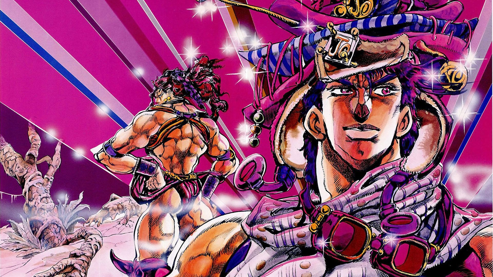
Explication de la partie
Dans cette partie, l'histoire se déroule au Mexique avec la découverte des Hommes du Pillier, puis en Italie et la Suisse.
On suis Joseph Joestar, qui est le petit-fils de Jonathan (protaginiste de la partie 1) en 1939.
Straizo, un vieil ami de son grand-père, le retrouve et lui montre les Hommes du pilier : Kars, Wamuu et Esidisi, des créatures antiques qui veulent s'emparer de la Pierre rouge d’Aja pour devenir immortels.

Protagoniste - Joseph Joestar
Forcé d'aller battre les Hommens du Pillier, Joseph part en Italie pour retouver Lisa Lisa pour aller s'entraîner et perfectionner le Hamon.
Il fait donc la rencontre de Lisa Lisa et découvre par la suite que c'est sa mère, et son Jobros, Caesar Zeppeli.
Joseph se bat donc contre Straizo, devenu vampire, puis contre Esidisi, Wamuu et pour finir Kars. Il possède plusieurs techniques: le Hamon et la technique secrète des Joestar.
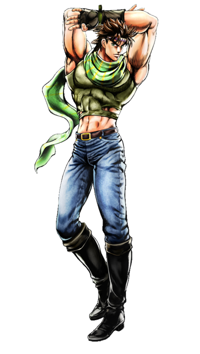
La technique secrète des Joestars est... la fuite :

Antagonistes - Esidisi, Wamuu, Kars
Les trois Hommes du Pilier viennent des zones du désert mexicain, d'Amérique du Sud, là où Kars et sa tribu se sont cachés pendant des siècles pour survivre à la lumière. Wamuu et Esidisi étaient ses amis fidèles.
Voici à quoi ressemble Esidisi et il maîtrise le fait de pouvoir lancer et manipuler son sang pour le chauffer :
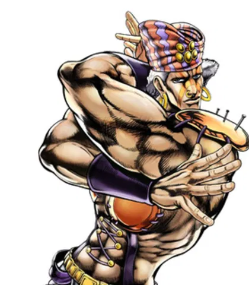
Wamuu est le 2e antagoniste qui fait partie des Hommes du Pillier. Il maîtrise le vent. Il peut cracher du vent et faire tourner ses bras pour faire du vent.
Voici à quoi il ressemble :
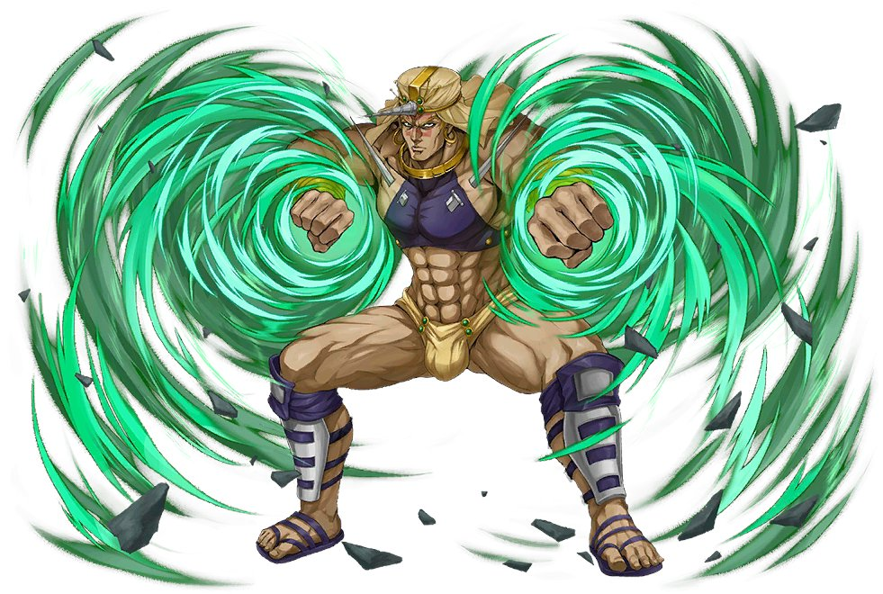
Pour finir, on va parler de Kars, l'antagoniste principal. Il a réussi à récuperer la Pierre d'Aja et est donc devenu immortel et ne craint pas la lumière du soleil.
Il pert en se faisant envoyer dans l'espace a la fin de son combat contre Joseph.
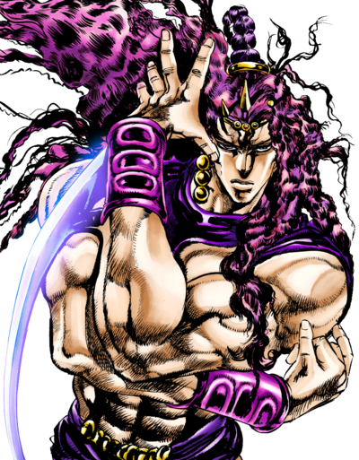
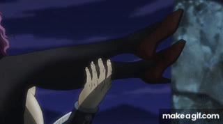
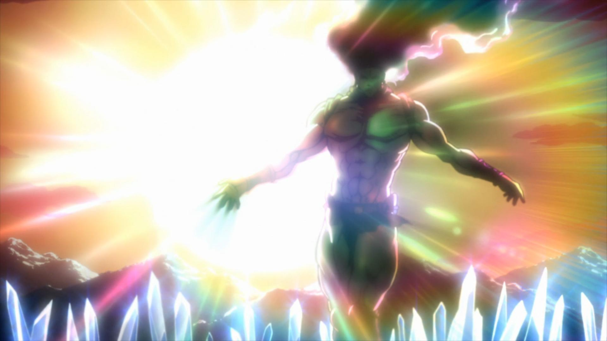
Alliés - Caesar Zeppeli, Lisa Lisa, Rodolph von Stroheim
Nous allons commencer par Caesar, le Jobros de Joseph, qui est malheureusement mort dans son combat contre Wamuu après s'être fait écraseé par un rocher qui est tombé du plafond.
Il maîtrisait les bulles de savon où il les impraignaient de Hamon.
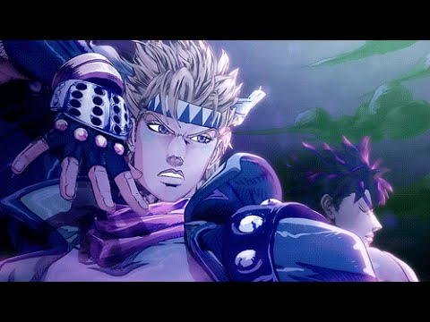
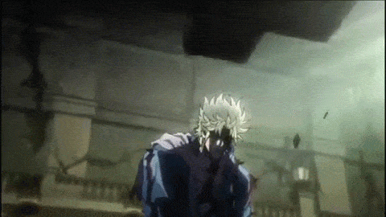

Ensuite voici a quoi ressemble Lisa Lisa, autrement dit la prof et la mère de Joseph:
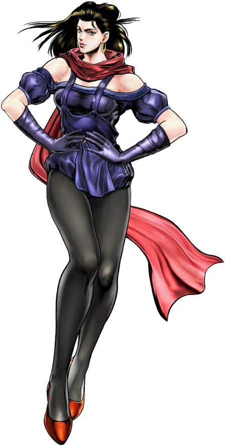
Pour finir, on va parler de Rodolph von Stroheim, il est soldat Nazi et accompagne Joseph et Caesar pour aller battre les Hommes du Pillier.
Voici à quoi il ressemble :
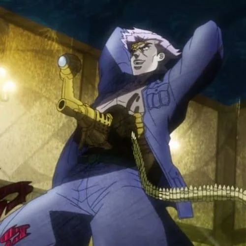
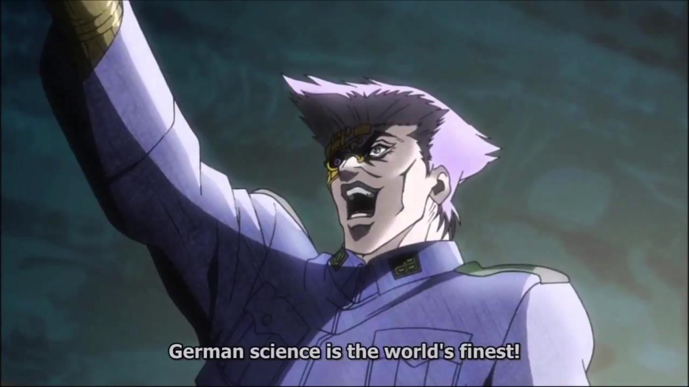